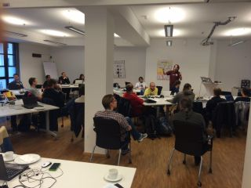
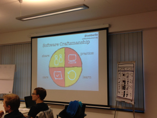
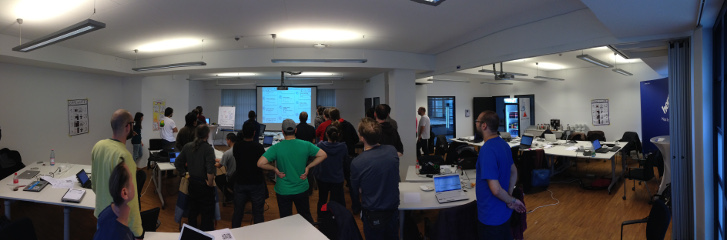
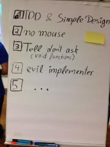
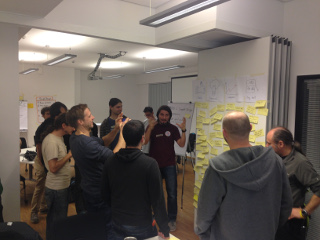

This memo is about my experiences from the Global Day of Coderetreat 2014 in Berlin.
This years Global Day of Coderetreat was my fourth Coderetreat and I enjoyed it very much. A big group of almost 35 passionate developers attended the event.
These were the constraints for the iterations:
The most challenging constraint to me was the "Tell, don't ask (void functions)" constraint. I don't know if this makes any sense in a functional language at all, but my pair and I tried to implement it in Java anyways. I was pretty confused, because first of all you have to think about how to structure your code to achive this goal. How will the next generation be calculated if all methods return nothing/void? One hint from the facilitator was that it is only allowed to send messages into the objects - like in the actor model. The big benefit about this approach is that the code is very well decoupled.
More about "Tell don't ask":
It was great to work one iteration with someone that was familiar with Clojure. To solve the problem in this language was fun. The pair suggesed me to read "The little Schemer" to better understand Lisp.
    
Date published: 2014-11-15
Date modified: 2014-12-01
Keywords: coderetreat, berlin, craftsmanship
{kind=link}
{kind=link}
{kind=link}
{kind=link}
{kind=link}
{kind=link}